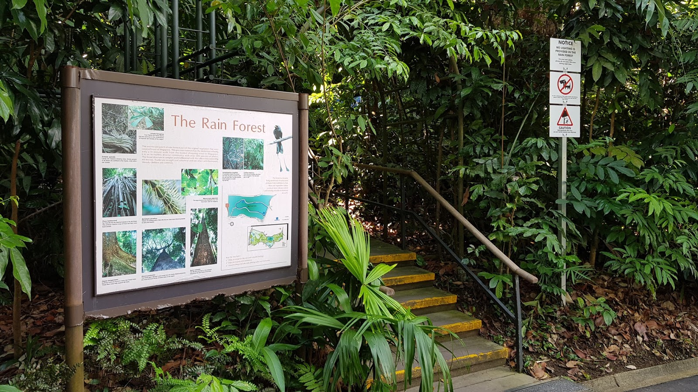
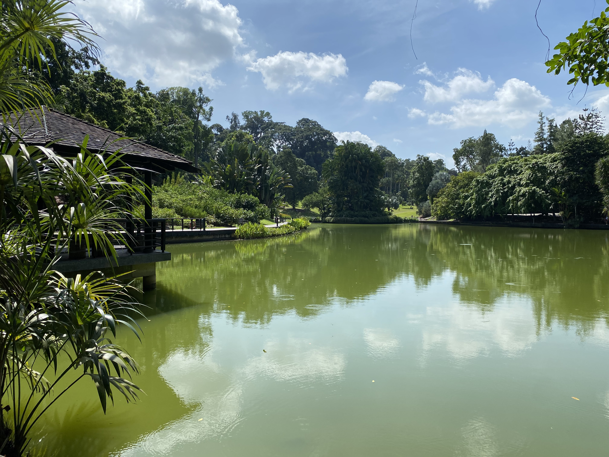

A Nature-Lover's Number 1 Go-To Destination!
Singapore Botanic Garden
Do you love the nature? Feeling sedentary and the need to exercise? Or are you a dog-person?
Singapore Botanic Garden is the perfect place for you!
The 82 hectares is filled with wonderful greenery for you to take a leisure stroll and sightseeing in nature. Visitors are also allowed to keep fit with its running trail across the entire garden! Not to mention this place is a haven for dog lovers! Many owners bring their dog out here for a walk.
02 The Trail
Joggers or nature lovers?
No matter what is your age, the verdant and well-marked nature trails in Singapore Botanic Gardens is very much suitable for you!

If you are running along the trail, keep a look out after running past the Eco-Lake and Healing Garden! That's when you will reach the symphony lake, and you might catch a stage performance at the symphony stage if you get lucky!
03 Sight-Seeings
Do you think that plants and flowers are the only thing you can find at The Botanic Gardens? Well then, you are wrong! You can find a variety of wildlife, garden and lakes here at The Botanic Garden.

Eco Garden & Lakes
There are a total of 3 different lakes here at the Botanic Garden. Eco-Lake, Symphony Lake, and Swan Lake. You can actually find real living swans in Swan Lake! They look incredibly magnificent
There is also a pet-friendly restaurant called The Halia for you to replenish yourselves after a long walk through the garden! Last but not least, this is also the perfect place for a Yoga class! Giving you a break from the hectic city-life and a sense a serenity during the weekend.
05 How To Get There?
Alight at Orchard or Botanic Gardens MRT station!
For more information check out the Singapore Botanic Garden's website.
HOPE TO SEE YOU THERE !